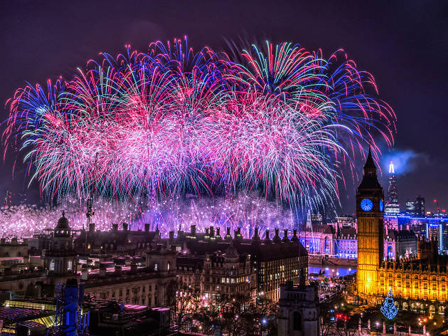
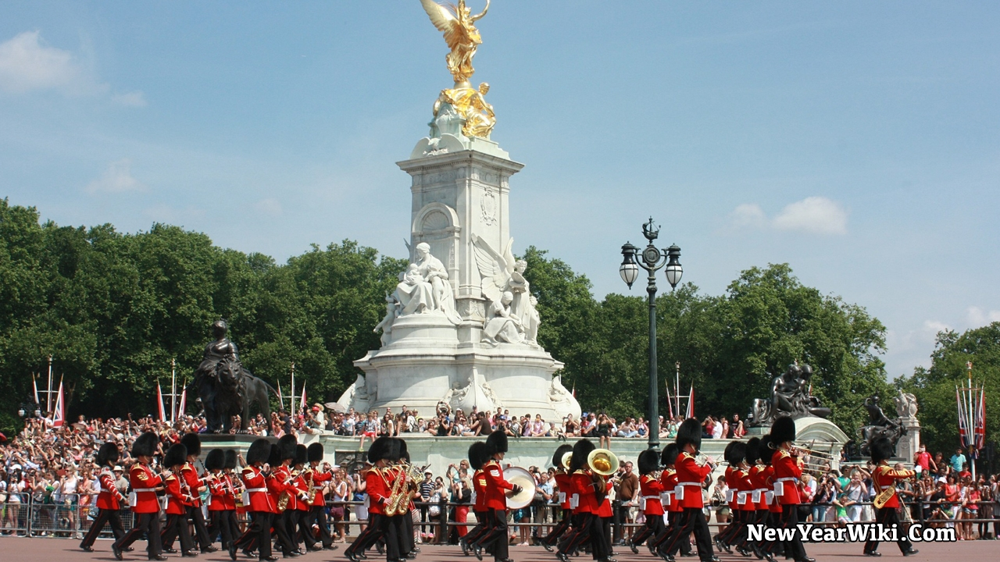
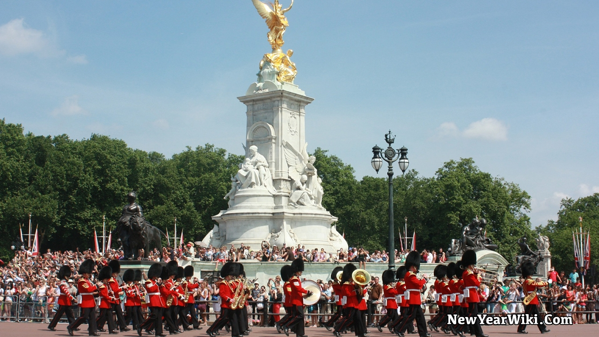
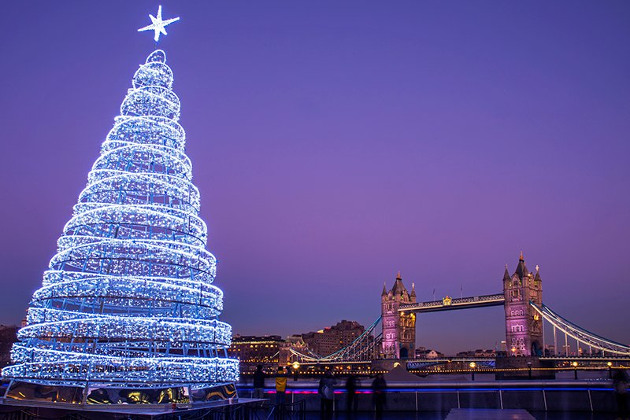
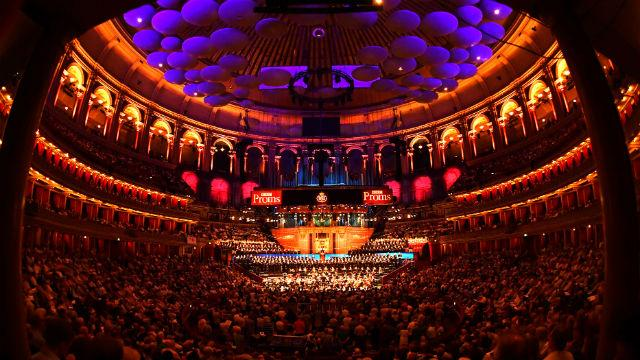
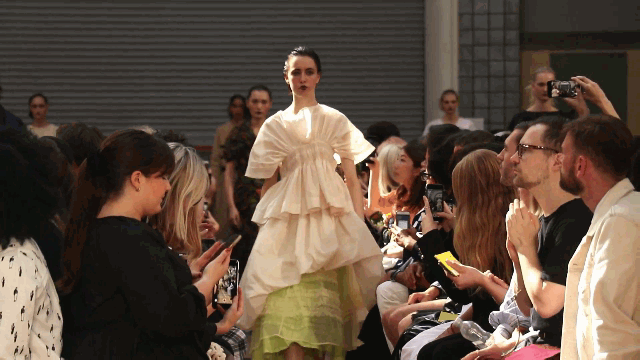
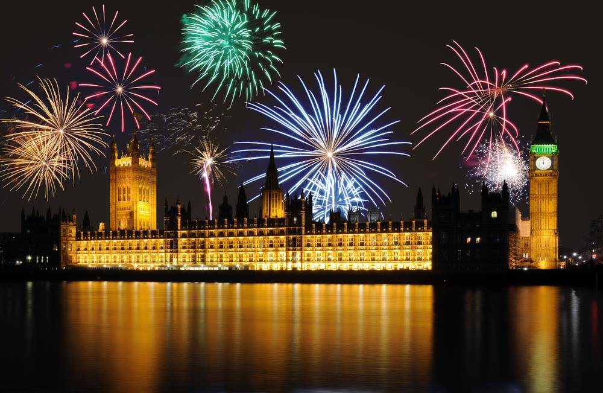
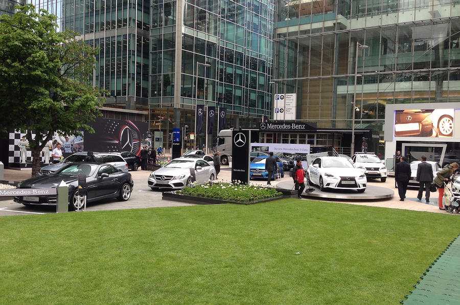
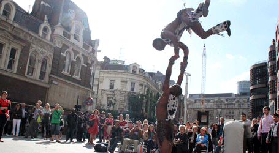

London is well-known for being the world's most visited city, attracting visitors from all over the globe.
And why shouldn't it be, given the abundance of sites that everyone should see at least once in their lives, the numerous historical and cultural landmarks, and, even more importantly, the tremendously diversified list of events held here each year?
London will always have something for travelers who want to share its stunning city atmosphere, from music and film festivals to major sporting events and amazing flower exhibitions.
Here are some of London's most popular annual events.
1. New Year’s Eve & New Year’s Day Parade
- When: 31st December & 1st January
- Location: Streets of London
London, like most cities, celebrates the end of the year with stunning fireworks displays in the sky above iconic monuments such as the London Eye, Big Ben, and the Tower of London.
Along the River Thames, fireworks will be launched into the sky.
The majority of guests will locate viewing locations near the river, so you'll need to get there early.
The New Year's Day Parade takes place the next day in London's streets.
 
 
2. Christmas
- When: December
- Location: Entirety of London
As everyone prepares for short vacations and celebrations, Christmas is one of the happiest times of the year in London.
The streets are decked out in holiday decorations and illuminated at night by towering Christmas trees.
Markets pop up at Covent Garden, Southbank, Hyde Park, and the London Bridge region, among other places.
The London Eye and the ice rink at the Natural History Museum are two places not to be missed at night.

3. The Proms
- When: August
- Location: Royal Albert Hall
The Proms – or The Henry Wood Promenade Concerts – are arguably London's most famous cultural event, taking place every summer at the Royal Albert Hall in South Kensington.
The Proms, which were first arranged by Robert Newman in 1895, have become a British classical concert and orchestral music tradition.
Every summer for eight weeks, The Proms feature daily concerts and music events.
The magnificent orchestras and outstanding conductors transport the audience to the worlds of Beethoven, Mozart, Walton, Wagner, and Strauss, as well as reinterpretations of well-known pop soundtracks.
The Grand Finale - The Last Night of the Proms – is unquestionably the highlight of the musical season.

4. London Fashion Week
- When: February & September
- Location: Somerset House
The first London Fashion Week took place in 1984, and it is now one of the most well-known fashion events in the world (together with those held in New York, Milan, and Paris, dubbed the "Big Four in Fashion").
The British Fashion Council hosts London Fashion Week every February and September, and it is a hugely popular event for designers.
This important fashion event is a fantastic opportunity for designers to show off their most inventive collections, as well as for the general public to see what's new for the coming season.

5. Bonfire Night
- When: 5th November
- Location: Throughout all of London's boroughs
Bonfire Night is an annual festival that takes place in many parts of the world and is based on numerous traditions and customs.
Bonfire Night is celebrated in the United Kingdom on November 5th, the anniversary of Guy Fawkes' attempt to blow up the House of Parliament in order to assassinate King James I.
As a result, London's Bonfire Night commemorates this soldier's failure.
The original one-night festival usually lasts an entire weekend, with people drawn in by the traditional bonfire toffee, sweet apple, black peas, or Catherine Wheel biscuits, which can be enjoyed while viewing the amazing fireworks display.

6. London Motorexpo
- When: June
- Location: Canary Wharf
Motorexpo, like other classic motor shows, was developed with the goal of keeping consumers up to date on the newest automotive news and advances.
Motorexpo is the largest yearly event of its kind that is open to the public and is free to attend. It attracts major manufacturers, retailers, and a large number of interested people.
Canary Wharf in the London Docklands hosts the auto exhibition.
BMW X6, Breckland Beira V8, and Mercedes-Benz E-Cabriolet are just a few of the well-known automobile models that were introduced here.

7. City of London Festival
- When: June or July
- Location: Throughout the entire City of London. Most notable venues are: St. Paul’s Cathedral, Liverpool Street Station and Guildhall Yard.
Another popular annual event among Londoners of all ages is the City of London Festival
The Festival, which normally takes place in June or July and lasts two or three weeks, features a wide range of activities, exhibitions, concerts, exhibits, and city tours based on the history of music, dance, opera, cinematography, literature, and different elements of political, economic, and social life.
The majority of the event takes place outside, in parks, gardens, and city squares, but it also takes place within venues such as St Paul's Cathedral and Livery Company Halls.
<